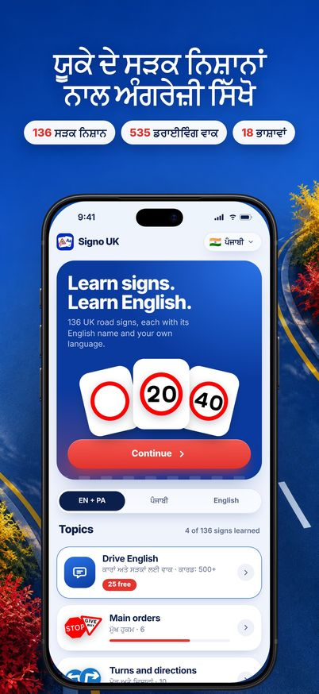
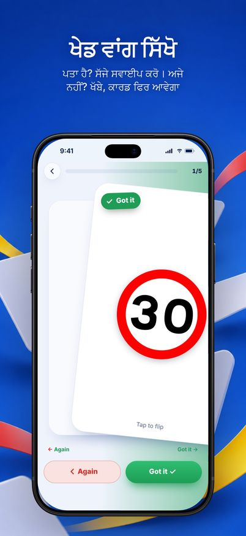
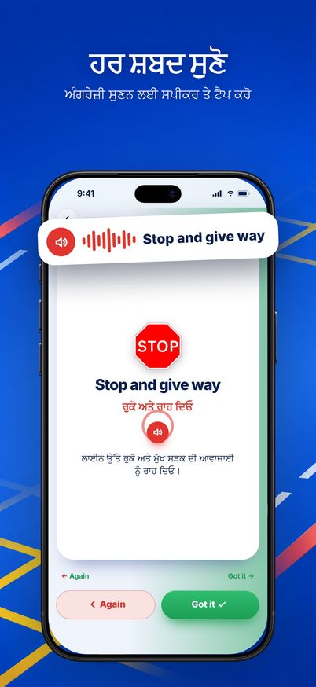
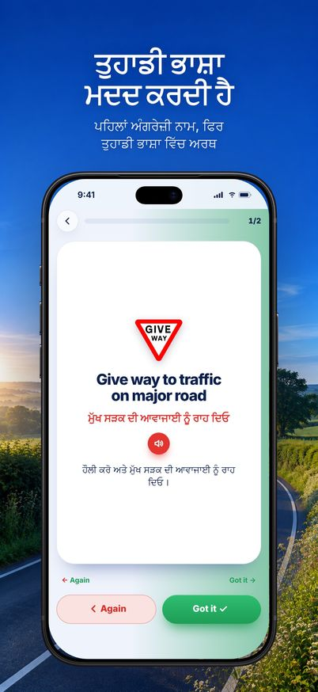
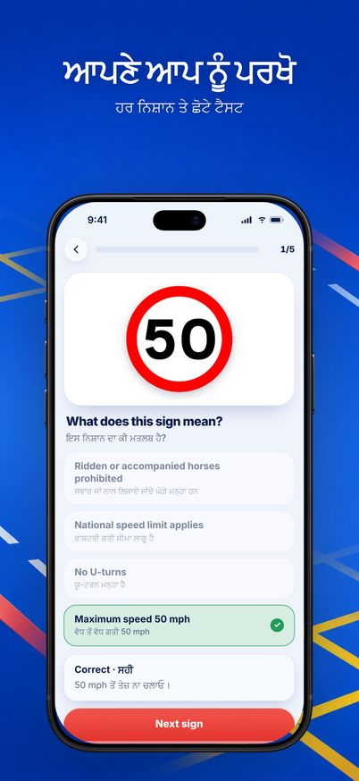
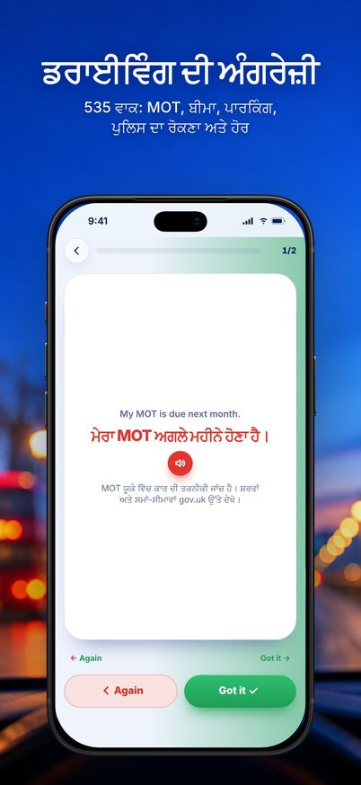
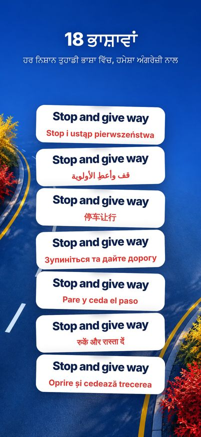
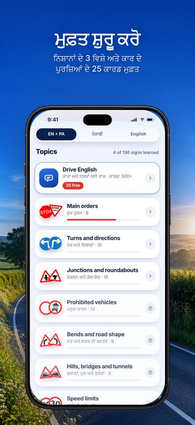

ਯੂਕੇ ਦੇ ਸੜਕ ਚਿੰਨ੍ਹ, ਪੰਜਾਬੀ ਵਿੱਚ
ਹਰ ਚਿੰਨ੍ਹ ਦਾ ਮਤਲਬ ਅਤੇ ਉਸਦਾ ਅੰਗਰੇਜ਼ੀ ਨਾਮ। Signo ਇੱਕ iPhone ਐਪ ਹੈ: ਯੂਕੇ ਵਿੱਚ ਡਰਾਈਵਿੰਗ ਲਈ 136 ਚਿੰਨ੍ਹ ਅਤੇ 535 ਵਾਕਾਂਸ਼, ਪੰਜਾਬੀ ਵਿਆਖਿਆ ਨਾਲ।
App Store ਤੋਂ ਡਾਊਨਲੋਡ ਕਰੋਮੁਫ਼ਤ: ਚਿੰਨ੍ਹਾਂ ਦੇ 3 ਵਿਸ਼ੇ ਅਤੇ ਕਾਰ ਦੇ ਪੁਰਜ਼ਿਆਂ ਦੇ 25 ਸ਼ਬਦ। Signo Pro ਸਭ ਕੁਝ ਖੋਲ੍ਹਦਾ ਹੈ।


ਖੇਡ ਵਾਂਗ ਸਿੱਖੋ
ਚਿੰਨ੍ਹ ਆਉਂਦਾ ਹੈ ਤਾਂ ਸੱਜੇ ਸਵਾਈਪ ਕਰੋ, ਨਹੀਂ ਤਾਂ ਖੱਬੇ, ਉਹ ਫਿਰ ਆਵੇਗਾ। ਹਰ ਅੰਗਰੇਜ਼ੀ ਨਾਮ ਬ੍ਰਿਟਿਸ਼ ਆਵਾਜ਼ ਵਿੱਚ ਸੁਣੋ, ਫਿਰ ਛੋਟਾ ਟੈਸਟ ਦਿਓ।








ਆਮ ਚਿੰਨ੍ਹ ਅਤੇ ਉਨ੍ਹਾਂ ਦਾ ਮਤਲਬ
ਵਿਆਖਿਆ ਦੇਖਣ ਲਈ ਕਿਸੇ ਚਿੰਨ੍ਹ 'ਤੇ ਟੈਪ ਕਰੋ।
- ਰੁਕੋ ਅਤੇ ਰਾਹ ਦਿਓStop and give way
 ਮੁੱਖ ਸੜਕ ਦੀ ਆਵਾਜਾਈ ਨੂੰ ਰਾਹ ਦਿਓGive way to traffic on major road
ਮੁੱਖ ਸੜਕ ਦੀ ਆਵਾਜਾਈ ਨੂੰ ਰਾਹ ਦਿਓGive way to traffic on major road ਵਾਹਨਾਂ ਲਈ ਦਾਖਲਾ ਮਨ੍ਹਾ ਹੈNo entry for vehicular traffic
ਵਾਹਨਾਂ ਲਈ ਦਾਖਲਾ ਮਨ੍ਹਾ ਹੈNo entry for vehicular traffic ਰਾਸ਼ਟਰੀ ਗਤੀ ਸੀਮਾ ਲਾਗੂ ਹੈNational speed limit applies
ਰਾਸ਼ਟਰੀ ਗਤੀ ਸੀਮਾ ਲਾਗੂ ਹੈNational speed limit applies- ਵੱਧ ਤੋਂ ਵੱਧ ਗਤੀ 30 mphMaximum speed 30 mph
 ਵੱਧ ਤੋਂ ਵੱਧ ਗਤੀ 20 mphMaximum speed 20 mph
ਵੱਧ ਤੋਂ ਵੱਧ ਗਤੀ 20 mphMaximum speed 20 mph ਵੱਧ ਤੋਂ ਵੱਧ ਗਤੀ 40 mphMaximum speed 40 mph
ਵੱਧ ਤੋਂ ਵੱਧ ਗਤੀ 40 mphMaximum speed 40 mph ਵੱਧ ਤੋਂ ਵੱਧ ਗਤੀ 50 mphMaximum speed 50 mph
ਵੱਧ ਤੋਂ ਵੱਧ ਗਤੀ 50 mphMaximum speed 50 mph ਵੱਧ ਤੋਂ ਵੱਧ ਗਤੀ 60 mphMaximum speed 60 mph
ਵੱਧ ਤੋਂ ਵੱਧ ਗਤੀ 60 mphMaximum speed 60 mph 20 mph ਜ਼ੋਨ ਵਿੱਚ ਦਾਖਲਾEntry to 20 mph zone
20 mph ਜ਼ੋਨ ਵਿੱਚ ਦਾਖਲਾEntry to 20 mph zone ਓਵਰਟੇਕ ਕਰਨਾ ਮਨ੍ਹਾ ਹੈNo overtaking
ਓਵਰਟੇਕ ਕਰਨਾ ਮਨ੍ਹਾ ਹੈNo overtaking ਸੱਜੇ ਮੁੜਨਾ ਮਨ੍ਹਾ ਹੈNo right turn
ਸੱਜੇ ਮੁੜਨਾ ਮਨ੍ਹਾ ਹੈNo right turn ਖੱਬੇ ਮੁੜਨਾ ਮਨ੍ਹਾ ਹੈNo left turn
ਖੱਬੇ ਮੁੜਨਾ ਮਨ੍ਹਾ ਹੈNo left turn ਯੂ-ਟਰਨ ਮਨ੍ਹਾ ਹੈNo U-turns
ਯੂ-ਟਰਨ ਮਨ੍ਹਾ ਹੈNo U-turns ਖੱਬੇ ਰਹੋKeep left
ਖੱਬੇ ਰਹੋKeep left ਮਿੰਨੀ-ਗੋਲ ਚੌਕMini-roundabout
ਮਿੰਨੀ-ਗੋਲ ਚੌਕMini-roundabout- ਅੱਗੇ ਗੋਲ ਚੌਕRoundabout ahead
 ਸਾਰੇ ਵਾਹਨ ਮਨ੍ਹਾ ਹਨAll vehicles prohibited
ਸਾਰੇ ਵਾਹਨ ਮਨ੍ਹਾ ਹਨAll vehicles prohibited ਮੋਟਰ ਵਾਹਨ ਮਨ੍ਹਾ ਹਨNo motor vehicles
ਮੋਟਰ ਵਾਹਨ ਮਨ੍ਹਾ ਹਨNo motor vehicles ਮੁੱਖ ਕੈਰੇਜਵੇ ਉੱਤੇ ਰੁਕਣਾ ਮਨ੍ਹਾ ਹੈNo stopping on main carriageway
ਮੁੱਖ ਕੈਰੇਜਵੇ ਉੱਤੇ ਰੁਕਣਾ ਮਨ੍ਹਾ ਹੈNo stopping on main carriageway ਸਿਰਫ਼ ਬੱਸਾਂ, ਸਾਈਕਲਾਂ ਅਤੇ ਟੈਕਸੀਆਂ ਲਈ ਰਸਤਾRoute for use by buses, pedal cycles and taxis only
ਸਿਰਫ਼ ਬੱਸਾਂ, ਸਾਈਕਲਾਂ ਅਤੇ ਟੈਕਸੀਆਂ ਲਈ ਰਸਤਾRoute for use by buses, pedal cycles and taxis only ਨਿਯੰਤਰਿਤ ਪਾਰਕਿੰਗ ਜ਼ੋਨ ਦਾ ਪ੍ਰਵੇਸ਼Entrance to controlled parking zone
ਨਿਯੰਤਰਿਤ ਪਾਰਕਿੰਗ ਜ਼ੋਨ ਦਾ ਪ੍ਰਵੇਸ਼Entrance to controlled parking zone ਸਿਰਫ਼ ਪਰਮਿਟ ਧਾਰਕਾਂ ਲਈPermit holders only
ਸਿਰਫ਼ ਪਰਮਿਟ ਧਾਰਕਾਂ ਲਈPermit holders only ਸਿਰਫ਼ ਅਪਾਹਜ ਬੈਜ ਧਾਰਕਾਂ ਲਈDisabled badge holders only
ਸਿਰਫ਼ ਅਪਾਹਜ ਬੈਜ ਧਾਰਕਾਂ ਲਈDisabled badge holders only ਪਾਰਕਿੰਗ ਦੀ ਥਾਂParking place
ਪਾਰਕਿੰਗ ਦੀ ਥਾਂParking place ਸਪੀਡ ਕੈਮਰੇSpeed cameras
ਸਪੀਡ ਕੈਮਰੇSpeed cameras ਰੁਕੋ – ਪੁਲਿਸStop - Police
ਰੁਕੋ – ਪੁਲਿਸStop - Police ਉਹ ਥਾਂ ਜਿੱਥੋਂ ਮੋਟਰਵੇਅ ਨਿਯਮ ਲਾਗੂ ਹੋਣੇ ਸ਼ੁਰੂ ਹੁੰਦੇ ਹਨPoint at which motorway regulations start to apply
ਉਹ ਥਾਂ ਜਿੱਥੋਂ ਮੋਟਰਵੇਅ ਨਿਯਮ ਲਾਗੂ ਹੋਣੇ ਸ਼ੁਰੂ ਹੁੰਦੇ ਹਨPoint at which motorway regulations start to apply ਅੱਗੇ ਟ੍ਰੈਫਿਕ ਸਿਗਨਲTraffic signals ahead
ਅੱਗੇ ਟ੍ਰੈਫਿਕ ਸਿਗਨਲTraffic signals ahead ਜ਼ੈਬਰਾ ਕਰਾਸਿੰਗZebra crossing
ਜ਼ੈਬਰਾ ਕਰਾਸਿੰਗZebra crossing ਅੱਗੇ ਸਕੂਲ ਜਾਂ ਖੇਡ ਦੇ ਮੈਦਾਨ ਨੂੰ ਜਾਂਦੇ ਜਾਂ ਆਉਂਦੇ ਬੱਚੇChildren going to or from school or playground ahead
ਅੱਗੇ ਸਕੂਲ ਜਾਂ ਖੇਡ ਦੇ ਮੈਦਾਨ ਨੂੰ ਜਾਂਦੇ ਜਾਂ ਆਉਂਦੇ ਬੱਚੇChildren going to or from school or playground ahead ਸੜਕ ਦਾ ਕੰਮRoad works
ਸੜਕ ਦਾ ਕੰਮRoad works ਤਿਲਕਣ ਵਾਲੀ ਸੜਕSlippery road
ਤਿਲਕਣ ਵਾਲੀ ਸੜਕSlippery road ਅੱਗੇ ਗੇਟ ਜਾਂ ਬੈਰੀਅਰ ਵਾਲਾ ਰੇਲਵੇ ਕਰਾਸਿੰਗLevel crossing with gate or barrier ahead
ਅੱਗੇ ਗੇਟ ਜਾਂ ਬੈਰੀਅਰ ਵਾਲਾ ਰੇਲਵੇ ਕਰਾਸਿੰਗLevel crossing with gate or barrier ahead ਅੱਗੇ ਬਿਨਾਂ ਗੇਟ ਜਾਂ ਬੈਰੀਅਰ ਵਾਲਾ ਰੇਲਵੇ ਕਰਾਸਿੰਗRailway level crossing without gate or barrier ahead
ਅੱਗੇ ਬਿਨਾਂ ਗੇਟ ਜਾਂ ਬੈਰੀਅਰ ਵਾਲਾ ਰੇਲਵੇ ਕਰਾਸਿੰਗRailway level crossing without gate or barrier ahead ਸਾਹਮਣੇ ਤੋਂ ਆਉਂਦੇ ਵਾਹਨਾਂ ਨੂੰ ਤਰਜੀਹ ਦਿਓGive priority to vehicles from opposite direction
ਸਾਹਮਣੇ ਤੋਂ ਆਉਂਦੇ ਵਾਹਨਾਂ ਨੂੰ ਤਰਜੀਹ ਦਿਓGive priority to vehicles from opposite direction ਸਾਹਮਣੇ ਤੋਂ ਆਉਂਦੇ ਵਾਹਨਾਂ ਉੱਤੇ ਆਵਾਜਾਈ ਨੂੰ ਤਰਜੀਹ ਹੈTraffic has priority over oncoming vehicles
ਸਾਹਮਣੇ ਤੋਂ ਆਉਂਦੇ ਵਾਹਨਾਂ ਉੱਤੇ ਆਵਾਜਾਈ ਨੂੰ ਤਰਜੀਹ ਹੈTraffic has priority over oncoming vehicles ਦਿਖਾਈ ਉਚਾਈ ਤੋਂ ਉੱਚੇ ਵਾਹਨ ਮਨ੍ਹਾ ਹਨNo vehicles over height shown
ਦਿਖਾਈ ਉਚਾਈ ਤੋਂ ਉੱਚੇ ਵਾਹਨ ਮਨ੍ਹਾ ਹਨNo vehicles over height shown ਅੱਗੇ ਟੀ-ਜੰਕਸ਼ਨT-junction ahead
ਅੱਗੇ ਟੀ-ਜੰਕਸ਼ਨT-junction ahead ਅੱਗੇ ਚੌਰਾਹਾCrossroads ahead
ਅੱਗੇ ਚੌਰਾਹਾCrossroads ahead ਇੱਕ-ਲੇਨ ਸੜਕSingle track road
ਇੱਕ-ਲੇਨ ਸੜਕSingle track road ਲੰਘਣ ਦੀ ਥਾਂPassing place
ਲੰਘਣ ਦੀ ਥਾਂPassing place
ਕਾਰ ਦੇ ਪੁਰਜ਼ੇ ਅੰਗਰੇਜ਼ੀ ਵਿੱਚ
ਮੁਫ਼ਤ Drive English ਅਧਿਆਇ ਦੇ 25 ਸ਼ਬਦ। ਸੁਣਨ ਲਈ ਸ਼ਬਦ 'ਤੇ ਟੈਪ ਕਰੋ।
ਸਾਰੇ 136 ਚਿੰਨ੍ਹ ਐਪ ਵਿੱਚ ਹਨ
ਮੁਫ਼ਤ: ਚਿੰਨ੍ਹਾਂ ਦੇ 3 ਵਿਸ਼ੇ ਅਤੇ ਕਾਰ ਦੇ ਪੁਰਜ਼ਿਆਂ ਦੇ 25 ਸ਼ਬਦ। Signo Pro ਸਭ ਕੁਝ ਖੋਲ੍ਹਦਾ ਹੈ।